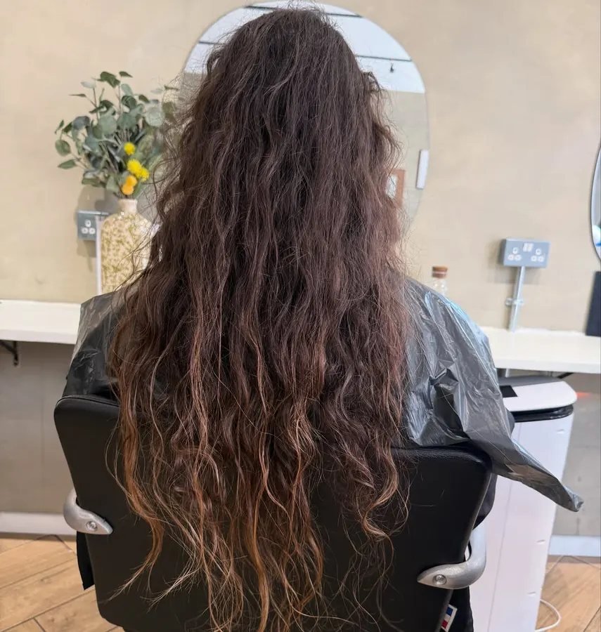
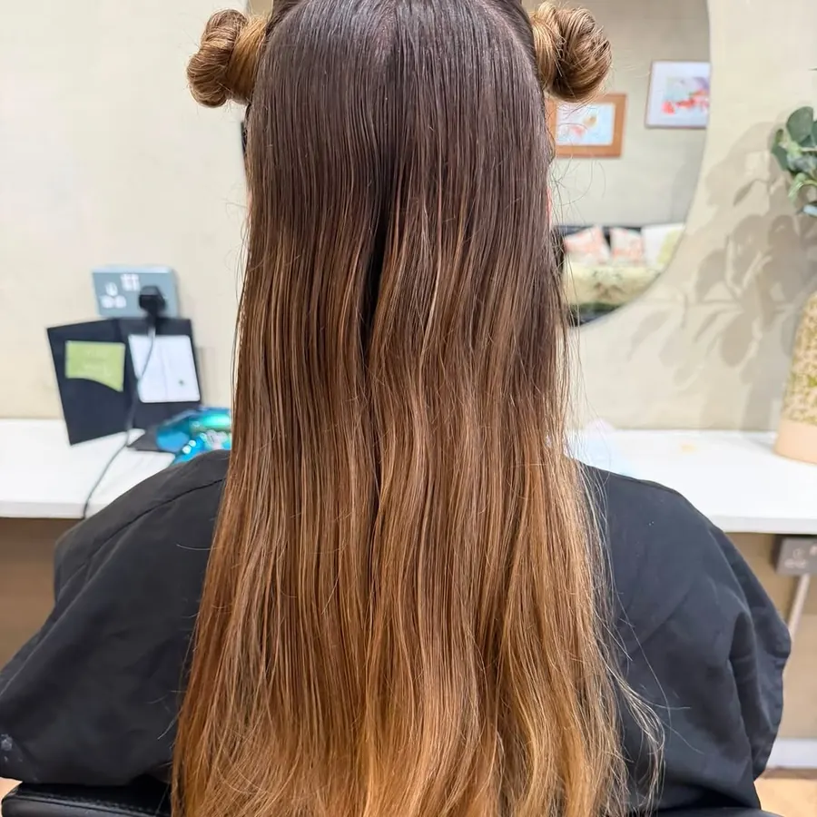

Before After
AfterSwipe through recent transformations, story-style. Each card shows the before on top and the finish below.
Mockup: only the copper balayage is a real pair. The other “before” photos are dimmed stand-ins until the salon supplies matched pairs.

BeforeAfter BeforePlaceholder beforeAfter
BeforePlaceholder beforeAfter
BeforePlaceholder before BeforePlaceholder beforeAfter
BeforePlaceholder beforeAfter BeforePlaceholder beforeAfter
BeforePlaceholder beforeAfter BeforePlaceholder beforeAfter
BeforePlaceholder beforeAfter